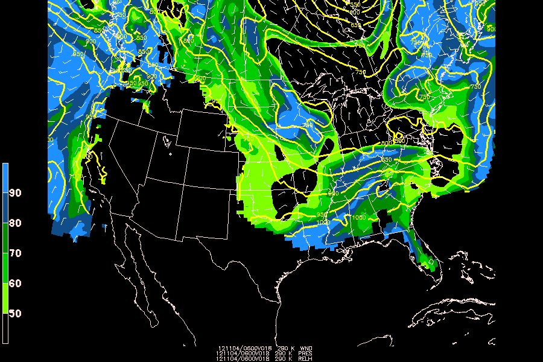

Isentropic ananlyses allow you to view vertical motion along a theta surface (dry adiabats) to asses vertical motion, and combined with relative humidity, may indicate convection or potential for convection.
First you must create a new grid file with gdcfil called thta.gem
GDOUTF = thta.gem
PROJ =
GRDAREA = us
KXKY =
MAXGRD = 200
CPYFIL = $MODEL/gfs/2012110312_gfs212.gem
ANLYSS =
GEMPAK-GDCFIL>r
Next, interpolate the vertical levels from pressure to isentropic coordinates THTA with gdvint:
GDFILE = $MODEL/gfs/2012110312_gfs212.gem
GDOUTF = thta.gem
GDATTIM = f018
GVCORD = pres/thta
GLEVEL = 280-320-10
MAXGRD = 200
GAREA = us
VCOORD = pres
GEMPAK-GDVINT>r
Finally, plot variables on the 280 K theta surface with gdplot2:
GDFILE = thta.gem
GDATTIM = f018
GLEVEL = 290
GVCORD = thta
PANEL = 0
SKIP =
SCALE = 0
GDPFUN = relh ! pres ! wnd
TYPE = f ! c ! B
CONTUR = 1
CINT = ! 50
LINE = ! 5//3
FINT = 10/50/90
FLINE = 0;21-25-1
HILO =
HLSYM =
CLRBAR = 1/V/ll
WIND = ! ! bk31/0.4
REFVEC = 10
TITLE = 1/-1 ! 1/-2 ! 1/-3
TEXT = 0.65/2//hw
CLEAR = n
GAREA = us
IJSKIP = 0 ! ! 3
PROJ = str/90;-100;0
MAP = 1
MSCALE =
LATLON = 0
DEVICE = xw
STNPLT =
SATFIL =
RADFIL =
IMCBAR =
LUTFIL =
STREAM =
POSN =
COLORS =
MARKER =
GRDLBL =
FILTER = no
GEMPAK-GDPLOT2>r
